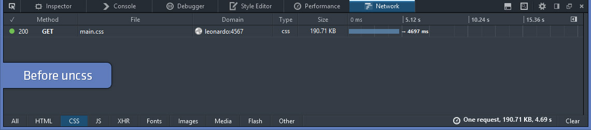

<!DOCTYPE html><html><head><meta charset=UTF-8 /><meta content="IE=edge,chrome=1" http-equiv=X-UA-Compatible /><meta content="width=device-width" name=viewport /><script>var host = "hellojason.net";
if ((host == window.location.host) && (window.location.protocol != "https:"))
  window.location.protocol = "https";</script><meta content="index,follow" name=robots /><link href="../../apple-touch-icon.png?v=Gvm449pRYq" rel=apple-touch-icon sizes=180x180 /><link href="../../favicon-32x32.png?v=Gvm449pRYq" rel=icon sizes=32x32 type="image/png"/><link href="../../favicon-16x16.png?v=Gvm449pRYq" rel=icon sizes=16x16 type="image/png"/><link href="/site.webmanifest?v=Gvm449pRYq" rel=manifest /><link color="#a432f4" href="../../safari-pinned-tab.svg?v=Gvm449pRYq" rel=mask-icon /><link href="../../favicon.ico?v=Gvm449pRYq" rel="shortcut icon"/><meta content="#a432f4" name=msapplication-TileColor /><meta content="#ffffff" name=theme-color /> <title>Hello Jason / Remove unused CSS from Middleman before deploying</title><meta content="Remove all unused CSS from your stylesheets, during the build process, before deploying your Middleman site." name=description /><link href="../../assets/stylesheets/site-e686322a.css" rel=stylesheet /><link href="https://hellojason.net//blog/remove-unused-css-from-middleman-before-deploying/" rel=canonical /><script>(function(i,s,o,g,r,a,m){i['GoogleAnalyticsObject']=r;i[r]=i[r]||function(){
(i[r].q=i[r].q||[]).push(arguments)},i[r].l=1*new Date();a=s.createElement(o),
m=s.getElementsByTagName(o)[0];a.async=1;a.src=g;m.parentNode.insertBefore(a,m)
})(window,document,'script','//www.google-analytics.com/analytics.js','ga');

ga('create', 'UA-48926813-1', 'auto');
ga('send', 'pageview');
ga('set', 'anonymizeIp', true);</script></head><body class="blog blog_remove-unused-css-from-middleman-before-deploying blog_remove-unused-css-from-middleman-before-deploying_index"></body><header class=banner role=banner><div id=primary-navigation role=navigation><div class=navbar-header><a class=logo href="/" title="Hello Jason Portfolio"><svg id=hellojason-logo xmlns="http://www.w3.org/2000/svg" width="0.56in" height="0.56in" viewBox="0 0 40.6 40.6"><defs><style>.cls-1{fill:#fbac2d;}</style></defs><title>hello-jason-logo</title><path class=cls-1 d="M9.3,13.1a4.11,4.11,0,0,1,2.8-.7H29.9a4.42,4.42,0,0,1,2.9.7,3.39,3.39,0,0,1,.8,2.5v0.5H28.4A1.43,1.43,0,0,0,27,17.5v0.9q3.75,0,4.8.9c0.7,0.6.9,2.9,0.9,2.9a28.1,28.1,0,0,1,.1,2.9V29a1.43,1.43,0,0,1-1.4,1.4h-8A1.43,1.43,0,0,1,22,29V28.1c0-1.9.2-3.1,0.7-3.6a3.37,3.37,0,0,1,1.7-.6,1.42,1.42,0,0,0,1.4-1.2,1.33,1.33,0,0,0-1.4-1.1H16.9A1.43,1.43,0,0,0,15.5,23v0.7c1.6,0,2.7.2,3.2,0.7a5.14,5.14,0,0,1,.6,2.3,23.48,23.48,0,0,1,.1,2.6A1.33,1.33,0,0,1,18,30.4H11A1.43,1.43,0,0,1,9.6,29V23.5c0-2.2.3-3.5,0.8-4.1a4.15,4.15,0,0,1,1.8-.7,15.26,15.26,0,0,1,1.8-.1,1.23,1.23,0,0,0,.4-1.2A1.33,1.33,0,0,0,13,16.2H8.5V15.5a2.92,2.92,0,0,1,.8-2.4" transform="translate(-0.7 -0.7)"/><path class=cls-1 d="M21,3.4A17.6,17.6,0,1,1,3.4,21,17.63,17.63,0,0,1,21,3.4m0-2.7A20.3,20.3,0,1,0,41.3,21,20.31,20.31,0,0,0,21,.7h0Z" transform="translate(-0.7 -0.7)"/></svg><span class=tagline>Hello, I'm Jason.</span></a></div><div id=primary-container><ul class=nav><li class=nav-item-blog><a href='/'>Blog</a></li><li class=nav-item-projects><a href='/projects/'>Projects</a></li><li class=nav-item-about><a href='/about/'>About</a></li></ul></div></div><div class=container><h1 class=title>Remove unused CSS from Middleman before deploying</h1></div><svg class=icon-arrow-downright xmlns="http://www.w3.org/2000/svg" width="8.4" height="8.5" viewBox="0 0 8.4 8.5"><title>icon-arrow-downright</title><path d="M2.3,8.5,0,6.1H4.5L0,1.6,1.6,0,6.1,4.5V0L8.4,2.3V8.5Z"/></svg></header></html><article id=article-single role=main><time class=time datetime="2015-04-21 15:24:00 -0500" pubdate=pubdate>Published April 21, 2015</time><hr/><p>This guide gives you the ability to build your site, remove unused CSS, minify the CSS, then deploy to a server&mdash;<strong>all with a single command</strong>.</p> <h2>Why remove unused CSS?</h2> <p>My craving stems from using the Bootstrap framework. It&rsquo;s a great package that I trust for client projects, and it makes ongoing maintenance and feature additions easier when switching between those projects. But Bootstrap is very robust, and I often don&rsquo;t need all of its components in every application.</p> <h2>Integrating with Middleman</h2> <p>Rather than mucking with my already-working build and deploy processes, I opted to use <a href="https://github.com/ben-eb/gulp-uncss">gulp-uncss</a> for automatic removal of unused CSS. This introduces a node/npm dependency to my project and adds gulp to my workflow, but the complexity is circumvented with simple rake tasks. The benefits of setting this up are completely worth it to me.</p> <p>This guide will cover 4 basic steps; 1 and 2 add the uncss tool, then 3 and 4 integrate that tool into simplified deployments, if you want that. Click a link below to jump to that respective section.</p> <ol> <li><a href="#section-npm">npm packages</a> - manages dependencies</li> <li><a href="#section-gulp">gulp tasks</a> - scans site and removes unused CSS</li> <li><a href="#section-deploy">middleman-deploy</a> - deployments (optional)</li> <li><a href="#section-rake">Rake tasks</a> - brings it all together</li> </ol> <hr> <p><a id=section-npm></a></p> <h3>1. npm packages</h3> <p>If you <strong>do not have a package.json</strong>, run <code>npm init</code> (requires <a href="https://nodejs.org/download/">nodejs</a>) in the <strong>root directory</strong> of your project. The walk-through will generate a package.json file, then you can add the <strong>devDependencies</strong> section from the example below.</p> <p>If you <strong>already have a package.json</strong> with other packages, add the <strong>devDependencies</strong> items from the example below.</p> <pre class="highlight json"><code><table class="rouge-table"><tbody><tr><td class="rouge-gutter gl"><pre class="lineno">1
2
3
4
5
6
7
8
9
10
11
12
13
14
15
16
17
18
19
20
21
22
</pre></td><td class=rouge-code><pre><span class="p">{</span><span class="w">
  </span><span class="s2">"name"</span><span class="p">:</span><span class="w"> </span><span class="s2">"your-project-name"</span><span class="p">,</span><span class="w">
  </span><span class="s2">"version"</span><span class="p">:</span><span class="w"> </span><span class="s2">"1.0.0"</span><span class="p">,</span><span class="w">
  </span><span class="s2">"description"</span><span class="p">:</span><span class="w"> </span><span class="s2">"Some project description"</span><span class="p">,</span><span class="w">
  </span><span class="s2">"main"</span><span class="p">:</span><span class="w"> </span><span class="s2">"gulpfile.js"</span><span class="p">,</span><span class="w">
  </span><span class="s2">"repository"</span><span class="p">:</span><span class="w"> </span><span class="p">{</span><span class="w">
    </span><span class="s2">"type"</span><span class="p">:</span><span class="w"> </span><span class="s2">"git"</span><span class="p">,</span><span class="w">
    </span><span class="s2">"url"</span><span class="p">:</span><span class="w"> </span><span class="s2">"https://github.com/user/repo.git"</span><span class="w">
  </span><span class="p">},</span><span class="w">
  </span><span class="s2">"author"</span><span class="p">:</span><span class="w"> </span><span class="s2">""</span><span class="p">,</span><span class="w">
  </span><span class="s2">"license"</span><span class="p">:</span><span class="w"> </span><span class="s2">""</span><span class="p">,</span><span class="w">
  </span><span class="s2">"bugs"</span><span class="p">:</span><span class="w"> </span><span class="p">{</span><span class="w">
    </span><span class="s2">"url"</span><span class="p">:</span><span class="w"> </span><span class="s2">"https://github.com/user/repo/issues"</span><span class="w">
  </span><span class="p">},</span><span class="w">
  </span><span class="s2">"homepage"</span><span class="p">:</span><span class="w"> </span><span class="s2">"https://github.com/user/repo"</span><span class="p">,</span><span class="w">
  </span><span class="s2">"devDependencies"</span><span class="p">:</span><span class="w"> </span><span class="p">{</span><span class="w">
    </span><span class="s2">"gulp"</span><span class="p">:</span><span class="w"> </span><span class="s2">""</span><span class="p">,</span><span class="w">
    </span><span class="s2">"gulp-uncss"</span><span class="p">:</span><span class="w"> </span><span class="s2">""</span><span class="p">,</span><span class="w">
    </span><span class="s2">"gulp-csso"</span><span class="p">:</span><span class="w"> </span><span class="s2">""</span><span class="p">,</span><span class="w">
    </span><span class="s2">"gulp-gzip"</span><span class="p">:</span><span class="w"> </span><span class="s2">""</span><span class="w">
  </span><span class="p">}</span><span class="w">
</span><span class="p">}</span><span class="w">
</span></pre></td></tr></tbody></table> </code></pre> <p>Once complete, run <code>npm install</code> in your project&rsquo;s <strong>root directory</strong>, which will install these packages into a folder called <strong>node_modules</strong>.</p> <hr> <p><a id=section-gulp></a></p> <h3>2. Gulp</h3> <p>Create a file named <code>gulpfile.js</code> in the project&rsquo;s <strong>root directory</strong> with the following code.</p> <p>This gulp task will scan all HTML pages, removing any unused CSS selectors from your stylesheet, then it will minify and save the stylesheet over itself. It also generates a gzip version for added savings.</p> <p><strong>Note</strong>, you may need to change some paths below so gulp can find your build&rsquo;s CSS directory.</p> <pre class="highlight javascript"><code><table class="rouge-table"><tbody><tr><td class="rouge-gutter gl"><pre class="lineno">1
2
3
4
5
6
7
8
9
10
11
12
13
14
15
16
17
18
19
20
</pre></td><td class=rouge-code><pre><span class="c1">// gulpfile.js</span>

<span class="kd">var</span> <span class="nx">gulp</span>   <span class="o">=</span> <span class="nx">require</span><span class="p">(</span><span class="s1">'gulp'</span><span class="p">);</span> <span class="c1">// core gulp</span>
<span class="kd">var</span> <span class="nx">uncss</span>  <span class="o">=</span> <span class="nx">require</span><span class="p">(</span><span class="s1">'gulp-uncss'</span><span class="p">);</span> <span class="c1">// removes unused css</span>
<span class="kd">var</span> <span class="nx">csso</span>   <span class="o">=</span> <span class="nx">require</span><span class="p">(</span><span class="s1">'gulp-csso'</span><span class="p">);</span> <span class="c1">// minify css</span>
<span class="kd">var</span> <span class="nx">gzip</span>   <span class="o">=</span> <span class="nx">require</span><span class="p">(</span><span class="s1">'gulp-gzip'</span><span class="p">);</span> <span class="c1">// gzip compression</span>

<span class="nx">gulp</span><span class="p">.</span><span class="nx">task</span><span class="p">(</span><span class="s1">'uncss'</span><span class="p">,</span> <span class="kd">function</span><span class="p">()</span> <span class="p">{</span>
  <span class="k">return</span> <span class="nx">gulp</span><span class="p">.</span><span class="nx">src</span><span class="p">(</span><span class="s1">'build/assets/css/**/*.css'</span><span class="p">)</span>
    <span class="p">.</span><span class="nx">pipe</span><span class="p">(</span><span class="nx">uncss</span><span class="p">({</span>
        <span class="na">html</span><span class="p">:</span> <span class="p">[</span><span class="s1">'build/**/*.html'</span><span class="p">]</span>
    <span class="p">}))</span>
    <span class="p">.</span><span class="nx">pipe</span><span class="p">(</span><span class="nx">csso</span><span class="p">())</span>
    <span class="p">.</span><span class="nx">pipe</span><span class="p">(</span><span class="nx">gulp</span><span class="p">.</span><span class="nx">dest</span><span class="p">(</span><span class="s1">'./build/assets/css'</span><span class="p">))</span>
    <span class="p">.</span><span class="nx">pipe</span><span class="p">(</span><span class="nx">gzip</span><span class="p">())</span>
    <span class="p">.</span><span class="nx">pipe</span><span class="p">(</span><span class="nx">gulp</span><span class="p">.</span><span class="nx">dest</span><span class="p">(</span><span class="s1">'./build/assets/css'</span><span class="p">));</span>
<span class="p">});</span>

<span class="c1">// Scan site, remove unused css, minifiy css, gzip css</span>
<span class="nx">gulp</span><span class="p">.</span><span class="nx">task</span><span class="p">(</span><span class="s1">'buildcss'</span><span class="p">,</span> <span class="p">[</span><span class="s1">'uncss'</span><span class="p">]);</span>
</pre></td></tr></tbody></table> </code></pre> <hr> <p>You&rsquo;re done. Build your project as normal&hellip;</p> <pre class="highlight shell"><code><table class="rouge-table"><tbody><tr><td class="rouge-gutter gl"><pre class="lineno">1
</pre></td><td class=rouge-code><pre>middleman build <span class="c"># or bundle exec middleman build</span>
</pre></td></tr></tbody></table> </code></pre> <p>&hellip;then run the uncss gulp task&hellip;</p> <pre class="highlight shell"><code><table class="rouge-table"><tbody><tr><td class="rouge-gutter gl"><pre class="lineno">1
</pre></td><td class=rouge-code><pre>gulp buildcss
</pre></td></tr></tbody></table> </code></pre> <p>&hellip;then verify that your build&rsquo;s stylesheet got smaller.</p> <p>Continue reading if you want to automate unused CSS removal with simplified deployments.</p> <hr> <p><a id=section-deploy></a></p> <h3>3. Deployments</h3> <p>I use the <a href="https://github.com/middleman-contrib/middleman-deploy">middleman-deploy</a> gem to deploy to git, specifically to GitHub; it also supports rsync, ftp, and sftp. Add this gem to your Gemfile and/or configure it in <code>config.rb</code> with your own staging and production locations.</p> <p><strong>Note</strong>, your configuration will depend on how/where you deploy, so go read their <a href="https://github.com/middleman-contrib/middleman-deploy#possible-configurations">configuration options</a>. The most important setting to keep is <code>deploy.build_before = false</code>, which tells middleman-deploy <strong>not</strong> to build the site before running its deploy sequence.</p> <p>Instead, we will let Middleman itself build the project using a rake task (next step), then run uncss on the outcome of that build, then use middleman-deploy just to push the site out.</p> <p>If this value were <code>true</code>, middleman-deploy would build the site again and overwrite our optimized stylesheet, and that would be terrible.</p> <pre class="highlight ruby"><code><table class="rouge-table"><tbody><tr><td class="rouge-gutter gl"><pre class="lineno">1
2
3
4
5
6
7
8
9
10
11
12
13
14
15
16
17
18
19
20
21
22
23
24
25
26
</pre></td><td class=rouge-code><pre><span class="c1"># config.rb</span>

<span class="k">case</span> <span class="no">ENV</span><span class="p">[</span><span class="s1">'TARGET'</span><span class="p">].</span><span class="nf">to_s</span><span class="p">.</span><span class="nf">downcase</span>
  <span class="c1">#</span>
  <span class="c1"># rake deploy:production</span>
  <span class="c1">#</span>
  <span class="k">when</span> <span class="s1">'production'</span>
    <span class="n">activate</span> <span class="ss">:deploy</span> <span class="k">do</span> <span class="o">|</span><span class="n">deploy</span><span class="o">|</span>
      <span class="n">deploy</span><span class="p">.</span><span class="nf">build_before</span> <span class="o">=</span> <span class="kp">false</span> <span class="c1"># build happens in rake task</span>
      <span class="n">deploy</span><span class="p">.</span><span class="nf">method</span> <span class="o">=</span> <span class="ss">:git</span>
      <span class="n">deploy</span><span class="p">.</span><span class="nf">remote</span>   <span class="o">=</span> <span class="s1">'origin'</span>
      <span class="n">deploy</span><span class="p">.</span><span class="nf">branch</span>   <span class="o">=</span> <span class="s1">'gh-pages'</span>
      <span class="n">deploy</span><span class="p">.</span><span class="nf">strategy</span> <span class="o">=</span> <span class="ss">:force_push</span>
    <span class="k">end</span>
  <span class="c1">#</span>
  <span class="c1"># rake deploy:staging</span>
  <span class="c1">#</span>
  <span class="k">when</span> <span class="s1">'staging'</span>
    <span class="n">activate</span> <span class="ss">:deploy</span> <span class="k">do</span> <span class="o">|</span><span class="n">deploy</span><span class="o">|</span>
      <span class="n">deploy</span><span class="p">.</span><span class="nf">build_before</span> <span class="o">=</span> <span class="kp">false</span> <span class="c1"># build happens in rake task</span>
      <span class="n">deploy</span><span class="p">.</span><span class="nf">method</span> <span class="o">=</span> <span class="ss">:git</span>
      <span class="n">deploy</span><span class="p">.</span><span class="nf">remote</span>   <span class="o">=</span> <span class="s1">'origin'</span>
      <span class="n">deploy</span><span class="p">.</span><span class="nf">branch</span>   <span class="o">=</span> <span class="s1">'staging'</span>
      <span class="n">deploy</span><span class="p">.</span><span class="nf">strategy</span> <span class="o">=</span> <span class="ss">:force_push</span>
    <span class="k">end</span>
  <span class="k">end</span>
</pre></td></tr></tbody></table> </code></pre> <hr> <p><a id=section-rake></a></p> <h3>4. Rake tasks</h3> <p>This is where everything comes together. A few rake commands will let us strategically add uncss to the deployment cycle, specifically <strong>after</strong> building and <strong>before</strong> deploying. Create a file named <code>Rakefile</code> in your project&rsquo;s <strong>root directory</strong> with the code below.</p> <p>Our rake tasks will just run a few shell commands for us; nothing fancy here, but I&rsquo;d rather type 1 command than 3. We want Middleman to build the site, uncss to optimize and minify the CSS, then middleman-deploy to deploy to the web server.</p> <p><strong>Note</strong>, remove <code>bundle exec</code> from these commands if you&rsquo;re not using bundler.</p> <pre class="highlight plaintext"><code><table class="rouge-table"><tbody><tr><td class="rouge-gutter gl"><pre class="lineno">1
2
3
4
5
6
7
8
9
10
11
12
13
14
15
16
17
18
19
20
21
22
23
24
25
26
27
28
</pre></td><td class=rouge-code><pre># Rakefile

namespace :deploy do

  def deploy(env)
    puts "Deploying to #{env}"
    system "TARGET=#{env} bundle exec middleman deploy"
  end

  task :local do
    sh "bundle exec middleman build"
    sh "gulp buildcss"
  end

  task :staging do
    sh "bundle exec middleman build"
    sh "gulp buildcss"
    deploy :staging
  end

  task :production do
    sh "bundle exec middleman build"
    sh "gulp buildcss"
    deploy :production
  end

end

</pre></td></tr></tbody></table> </code></pre> <hr> <h2>How to use all this</h2> <p>Run the appropriate rake task, which will deploy the <code>current branch</code> to the appropriate place (the places we setup in config.rb for middleman-deploy).</p> <p><strong>Local</strong></p> <p>Builds project and runs uncss. Stays local, does not deploy to any server.</p> <pre class="highlight plaintext"><code><table class="rouge-table"><tbody><tr><td class="rouge-gutter gl"><pre class="lineno">1
</pre></td><td class=rouge-code><pre>rake deploy:local
</pre></td></tr></tbody></table> </code></pre> <p><strong>Staging</strong></p> <p>Builds project, runs uncss, then deploys to <code>staging</code>.</p> <pre class="highlight plaintext"><code><table class="rouge-table"><tbody><tr><td class="rouge-gutter gl"><pre class="lineno">1
</pre></td><td class=rouge-code><pre>rake deploy:staging
</pre></td></tr></tbody></table> </code></pre> <p><strong>Production</strong></p> <p>Builds project, runs uncss, then deploys to <code>production</code>.</p> <pre class="highlight plaintext"><code><table class="rouge-table"><tbody><tr><td class="rouge-gutter gl"><pre class="lineno">1
</pre></td><td class=rouge-code><pre>rake deploy:production
</pre></td></tr></tbody></table> </code></pre> <hr> <h2>Results</h2> <p></p> <p>Before, the stylesheet on this site measured <strong>190.71 kb</strong>.</p> <p>Adding uncss to the build process shaved off 181.5 kb, shrinking that file to <strong>9.21 kb</strong> (a 95.15% decrease in file size). Gzipping reduces it to a mere <strong>3 kb</strong>.</p> <p>I accept that these particular numbers largely spotlight that Bootstrap may be overkill for this website, but the benefits of uncss in your workflow are undeniably fantastic.</p> <hr/><a class=back-to-articles href="/">&#8617; All articles</a><br/><br/></article><footer id=footer></footer><script src="//assets.codepen.io/assets/embed/ei.js" async=true></script>